Napsat skript od začátku
Nový prázdný skript, blok affect pro jednu postavu a v něm první příkaz.
Kroky#
- 1
Otevřete prázdnou kartu. Klikněte na + na konci řádku karet (nebo Soubor → Nový). Otevře se nová karta
unnamed.txts prázdným skriptem. Lišta režimů vlevo musí být na Události - pak je vlevo seznam Události se všemi příkazy.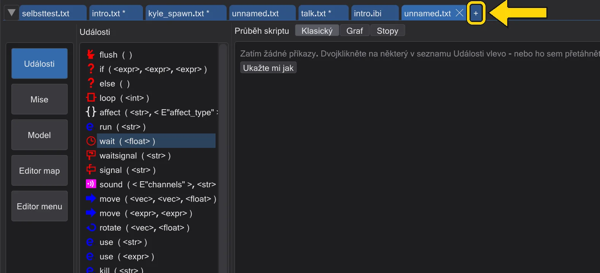
+ na konci řádku karet otevře prázdný skript. - 2
Najděte affect v seznamu. Seznam Události ukazuje každý příkaz hry s jeho hodnotami.
affectje skoro nahoře. Najeďte na něj myší a přečtěte si, co dělá.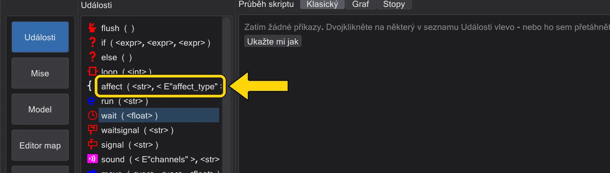
affect v seznamu Události. - 3
Dvakrát na něj klikněte.
affectse objeví ve stromu skriptu uprostřed. Je už otevřený (rámeček vpředu ukazuje minus), protože blok obsahuje jiné příkazy.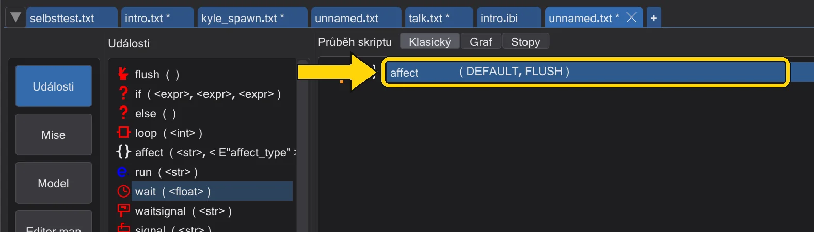
Nový blok affect ve stromu. - 4
Pojmenujte postavu. Dvakrát klikněte na nový řádek (nebo ho vyberte a stiskněte Enter). Otevře se Editor událostí. Do prvního pole napište jméno postavy - s načtenou mapou malá šipka vedle něj vypíše každý název mapy. Ve druhém poli nechte
FLUSHa stiskněte OK.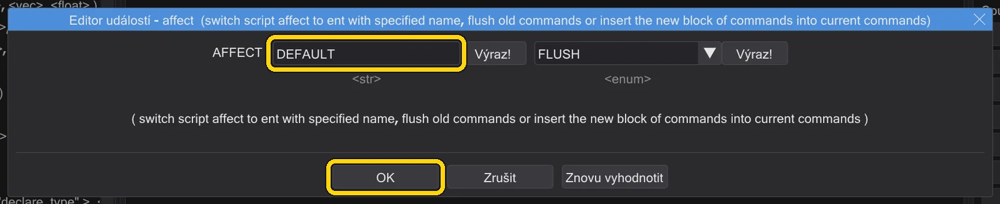
Editor událostí pro affect: pole názvu a OK. - 5
Vyberte blok, pak vyberte další příkaz. Klikněte jednou na řádek
affect(1). Pak v seznamu dvakrát klikněte nawait(2). Protože je vybraný blok otevřený, příkaz jde na začátek bloku.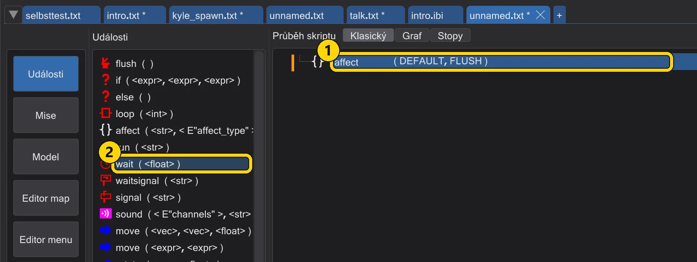
1: vybraný blok affect. 2: wait v seznamu. - 6
Zkontrolujte výsledek.
waitteď sedí uvnitř bloku, odsazený podaffect. Příkazy, které vložíte po něm, ho následují v pořadí, ve stejném bloku.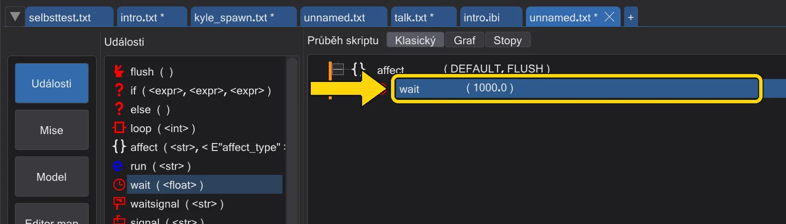
wait uvnitř bloku affect. - 7
Uložte. Stiskněte Uložit ve sloupci akcí vpravo (nebo Ctrl+S). Napoprvé se behaved zeptá na název - názvy skriptů jsou malými písmeny bez mezer, například
my_first.txt.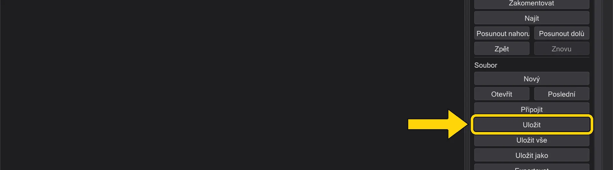
Uložit ve sloupci akcí.


- 1
Přepněte na Graf. Klikněte na Graf nad oblastí skriptu. Graf ukazuje misi: start hráče, skripty a entity, které je spouštějí.
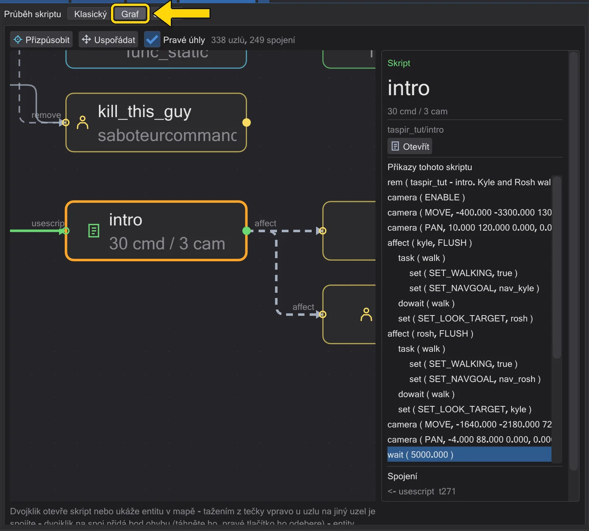
Přepínač pohledu nad oblastí skriptu: Graf. - 2
Přetáhněte affect na volné místo. Přetáhněte
affectze seznamu Události (1) na prázdné místo grafu (2). Ve složce mise se vytvoří nový skript saffectjako prvním příkazem a otevře se na vlastní kartě.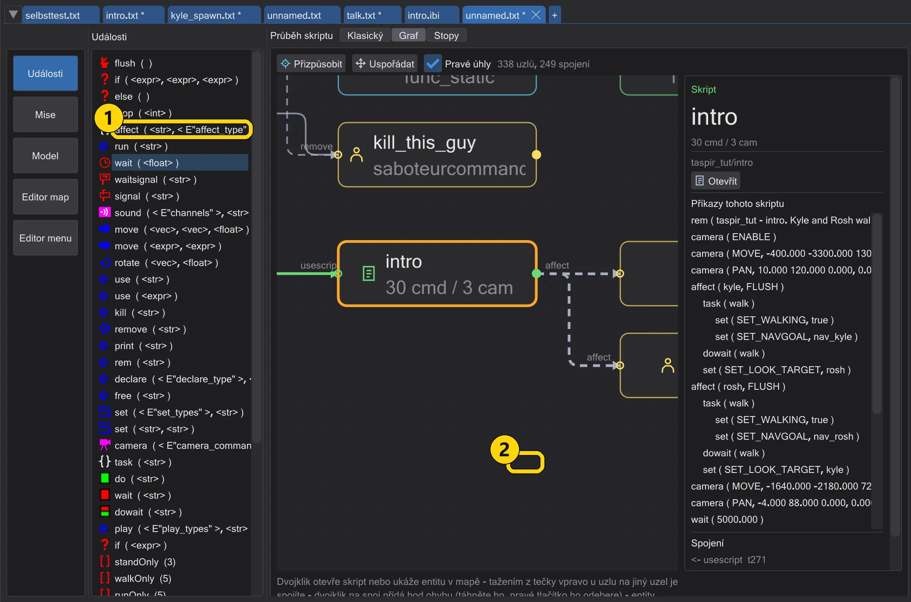
1: affect v seznamu Události. 2: volné místo v grafu. - 3
Nový uzel. Nový skript se objeví jako uzel tam, kde jste ho pustili, a je vybraný. Vpravo ukazuje Příkazy tohoto skriptu jeho jediný řádek:
affect.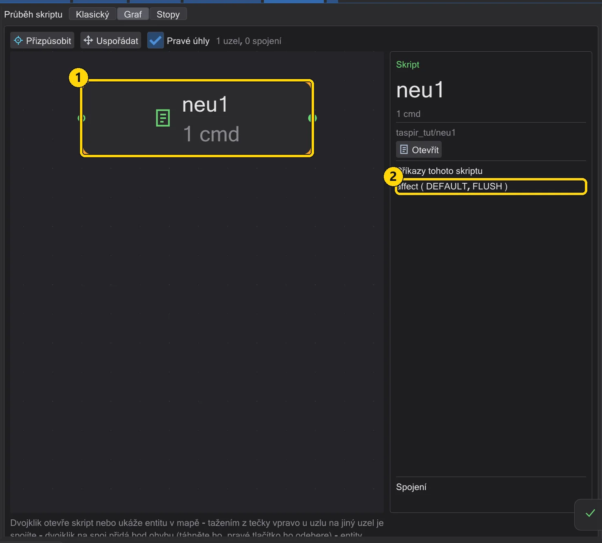
1: nový uzel skriptu. 2: jeho příkazy vpravo. - 5
Přidejte další příkaz do bloku. Klikněte na řádek
affect(1), pak v seznamu dvakrát klikněte nawait(2). Protožeaffectje otevřený blok,waitjde dovnitř.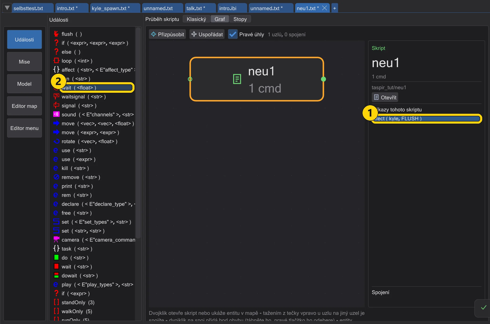
1: vybraný řádek affect. 2: wait v seznamu Události. - 6
Zkontrolujte výsledek.
waitstojí odsazený podaffect- je uvnitř bloku. Uzel počítá příkazy skriptu.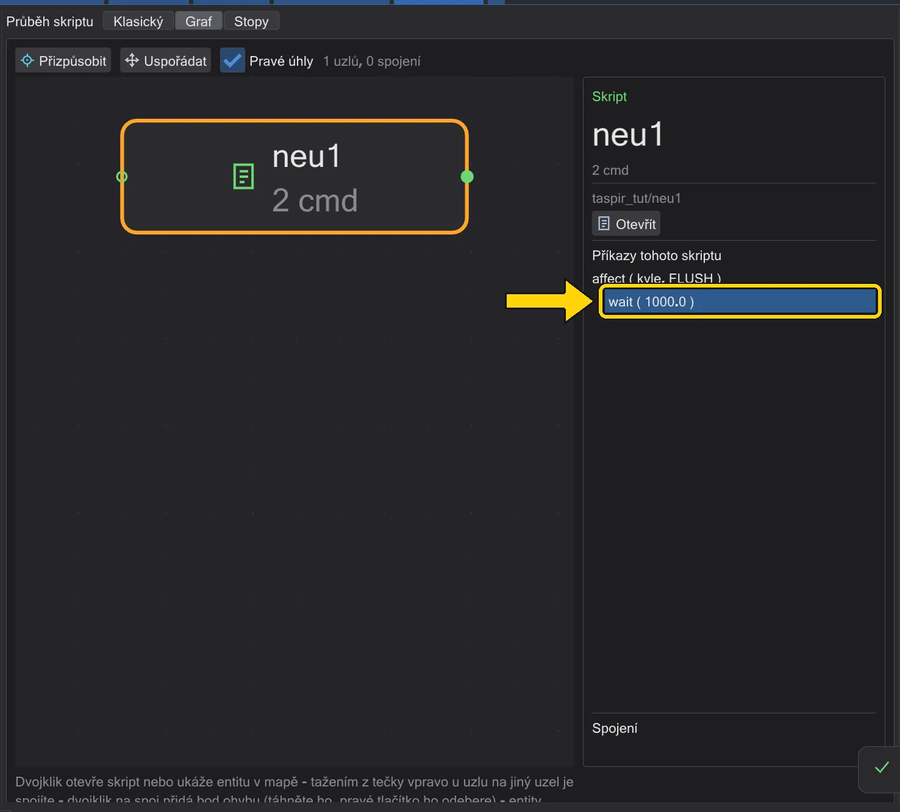
wait uvnitř bloku affect, v seznamu vpravo.


- 1
Otevřete prázdnou kartu a přepněte na Stopy. Klikněte na + na konci řádku karet, pak na Stopy nad oblastí skriptu. Časová osa říká, že na ní zatím nic není - a vpravo říká Seznam příkazů *Zatím žádné příkazy*.
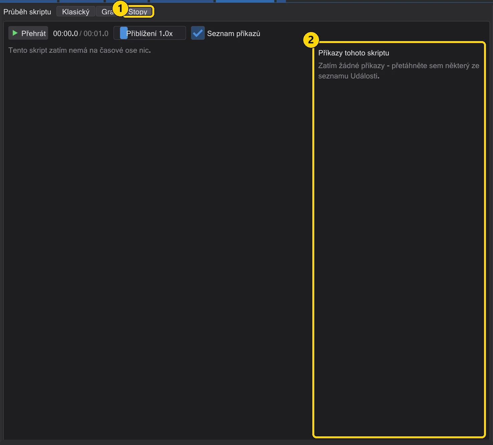
1: Stopy. 2: prázdný seznam příkazů vpravo. - 2
Přetáhněte affect do seznamu. Přetáhněte
affectze seznamu Události (1) do seznamu příkazů vpravo (2). Blokaffectnemá vlastní čas, takže se ukáže v seznamu, zatím ne na časové ose.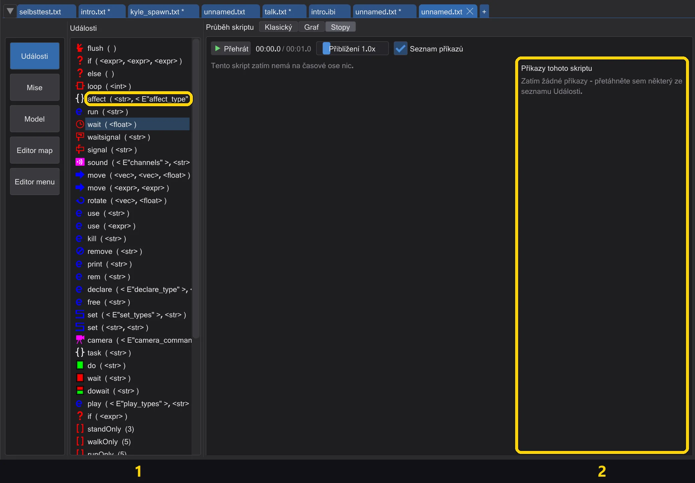
1: affect v seznamu Události. 2: seznam příkazů. - 4
Přidejte do bloku chůzi. Klikněte na řádek
affect(1), pak dvakrát klikněte nasetv seznamu Události (2) - jde dovnitř otevřeného bloku. V editoru zvolteSET_NAVGOALa cíl chůzenav_kyle.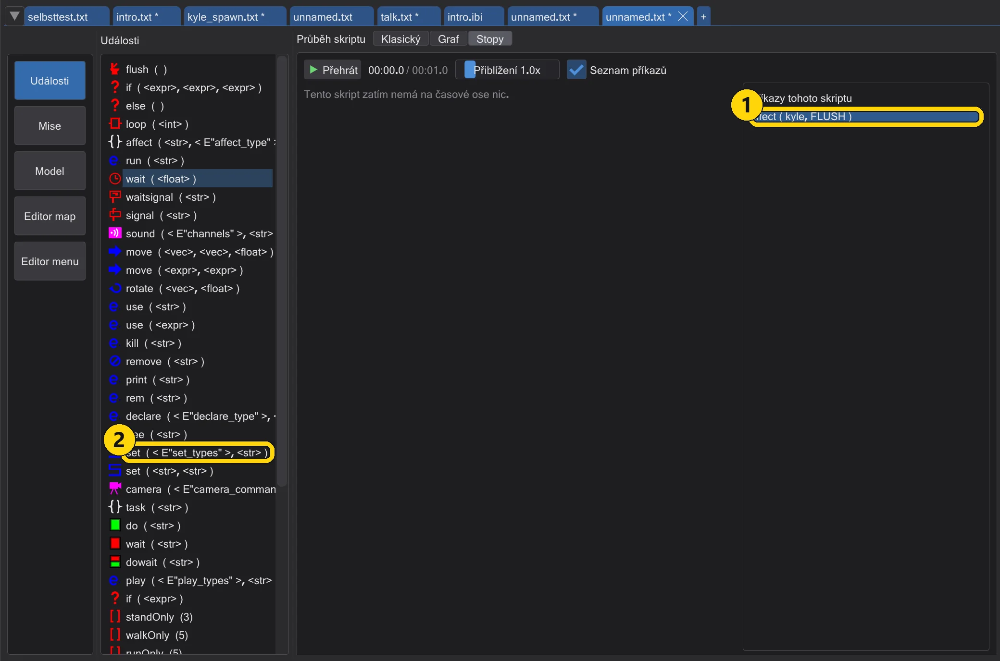
1: řádek affect. 2: set v seznamu Události. - 5
Teď je na časové ose. Postava dostala vlastní řádek a chůze je na něm blok - tak dlouhý, jak postava potřebuje, aby tam došla. Příkazy bez času (
affect, samotný blok) zůstávají v seznamu.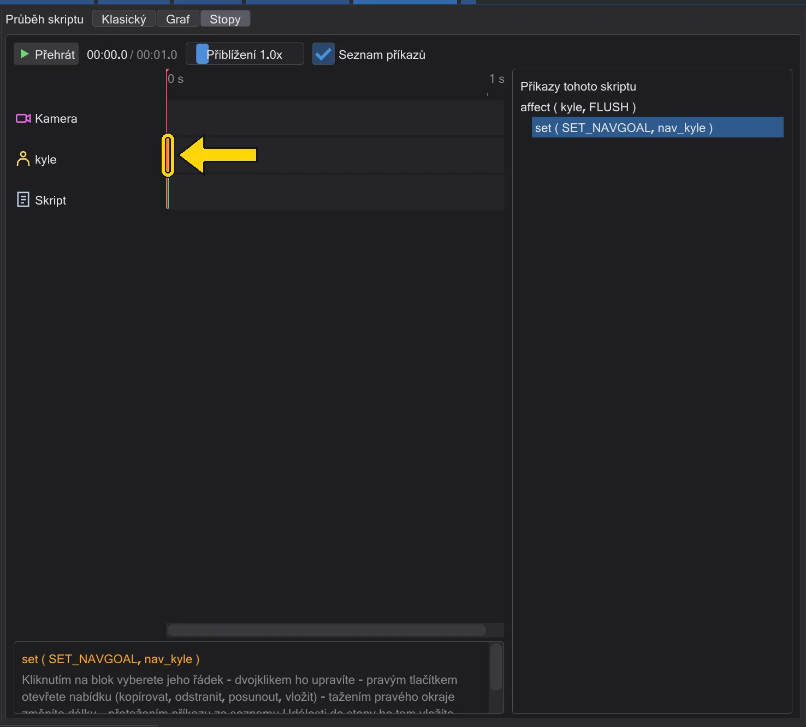
Kylův řádek s chůzí a seznam vpravo.


Dobré vědět#
- Je-li vybrán zavřený blok, nový příkaz jde za blok, ne do něj.
- Příkazy mohou obsahovat jen
affect,task,if,elsealoop.